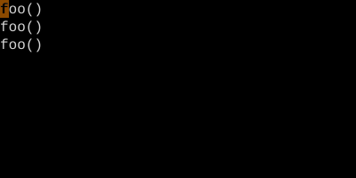
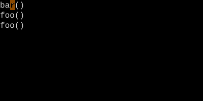

The Replace Loop — *, cw, then . . .
Search a word, change one, repeat with dot.
*cwNEWEsc, then n.n. — change every occurrence of a word, one at a time, with confirmation. The most-loved Vim refactoring loop.
*, cw, then . . . — The Replace Loop
The classic Vim refactoring loop. Searches for a word, changes one instance, then jumps to each next match where you decide whether to dot-repeat (apply) or skip.
| Key | Note |
|---|---|
| {key:*} | Cursor on word: search next exact match |
| {key:c}{key:w} | Change word — Vim drops you in insert mode |
| `NEW` | Type replacement |
| {key:Esc} | Back to normal mode — change is saved as the dot-target |
| {key:n} | Jump to next match |
| {key:.} | Apply the same change |
| {key:n} | Skip this one — just move to next |
| {key:.} | Apply… |
Worked example — * cw ...
Search-cursor-change-repeat — mass rename.


bar, Esc.


The classic Vim mass-edit. cgn is similar and even slicker — see the cgn variant.
Watch
See also: Word Search, Repeat Last Change, Change-Next-Match Loop — cgn